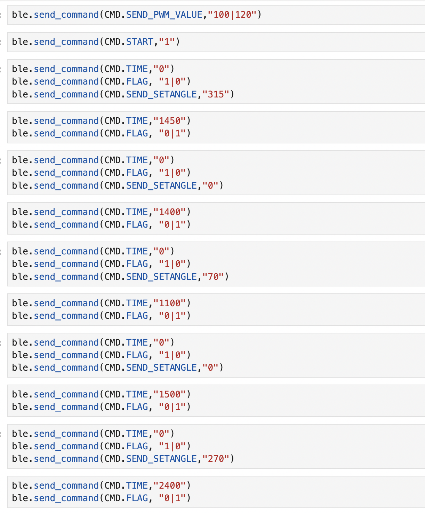
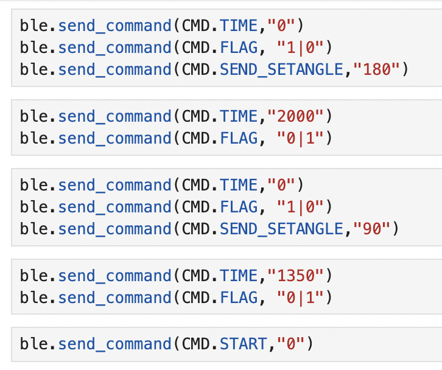
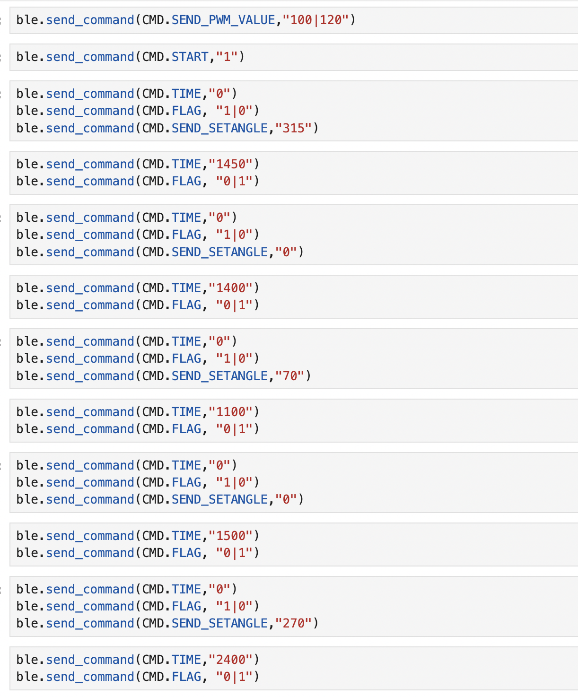
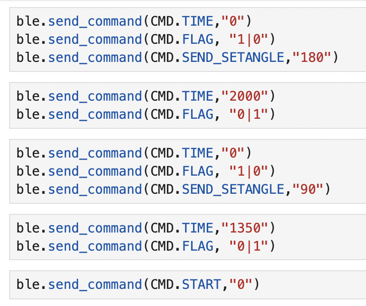

Introduction
The objective of this lab is to guide the robot through a predetermined series of waypoints within a designated map area with maximum efficiency and precision. The coordinates of the specified trajectory, along with a visual representation of the route on the map, are provided below. By adhering to the given waypoints, the robot is tasked with navigating through the map swiftly and accurately, showcasing its ability to follow predefined paths and effectively maneuver within its environment. This exercise serves as a practical demonstration of the robot's navigational capabilities and highlights its potential for autonomous operation in real-world scenarios.


The lab was intentionally crafted to offer a broad scope for exploration and experimentation. One potential solution involved implementing localization operations each time the robot transitioned between waypoints on the trajectory. This entailed performing a 360-degree rotation to gather ToF readings, which were then used to update the Bayesian filter, akin to the methodology demonstrated in Lab 11 Localization (Real). If discrepancies arose between the robot's belief matrix and the intended waypoint, corrective actions could be taken to realign the robot's path. However, a significant challenge emerged during implementation: while the robot adeptly executed localization operations initially, the precision degraded over successive iterations. Despite meticulous troubleshooting efforts, it became evident that accumulated errors in the IMU's drift calculation, particularly at startup, resulted in inaccuracies that compromised the reliability of the ToF data. Consequently, the proposed approach proved untenable, as the robot required multiple localization operations within a single run.
In response to this setback, a simpler yet effective alternative was adopted. The solution involved integrating the previously developed PID controllers for distance and orientation, leveraging hard-coded commands tailored to the trajectory. This approach facilitated open-loop control, wherein the robot autonomously followed predefined commands to navigate the course. During operation, the ToF and IMU PID controllers were activated alternately. The orientational control entailed in-axis rotations to maintain alignment with the trajectory, while position control was achieved by specifying reference distances to regulate the robot's proximity to obstacles. Though less intricate than the initial localization-based approach, this streamlined method offered a pragmatic solution that effectively guided the robot along the desired path with improved reliability and consistency.
 



Results
The actual test results depicted in the accompanying video showcase the performance of the robot within the designated map environment. Utilizing the open-loop control method, the robot operates without direct awareness of its true state, potentially leading to error accumulation over time. Despite this inherent limitation, the video demonstrates that the robot was able to roughly follow the trajectory outlined in the map. This highlights the fundamental feasibility of the implemented functionality, albeit with some deviations from the ideal path. A notable observation was that the primary source of error in the PID occurred during position control, particularly when the robot approached obstacles at certain angles. In such instances, the ToF detection was not perpendicular to the obstacle plane, resulting in larger errors and diminished positioning accuracy. This insight into the root cause of inaccuracies provides valuable guidance for refining the control algorithms and optimizing sensor positioning to enhance overall performance in future iterations.
Conclusion
As the Fast Robots course draws to a close, I reflect on the wealth of knowledge and skills I've acquired over the twelve comprehensive labs. Throughout the course, I had the opportunity to revisit familiar tools like PID control and IMU sensors, deepening my understanding and refining my proficiency in their application. Additionally, I delved into new theoretical concepts such as the Kalman Filter and Bayesian Filter, broadening my theoretical toolkit and honing my ability to apply advanced algorithms to real-world problems. Beyond technical expertise, the course equipped me with invaluable experience in project planning from inception to execution, encompassing considerations of mechanical layout and system design framework. These hands-on experiences have not only bolstered my technical acumen but have also instilled in me a holistic approach to problem-solving and project management. I extend my heartfelt gratitude to the course staff for their unwavering support, guidance, and expertise throughout this enriching journey. Their mentorship has been instrumental in my growth and development, and I am immensely grateful for the opportunity to learn and collaborate within this dynamic learning environment.